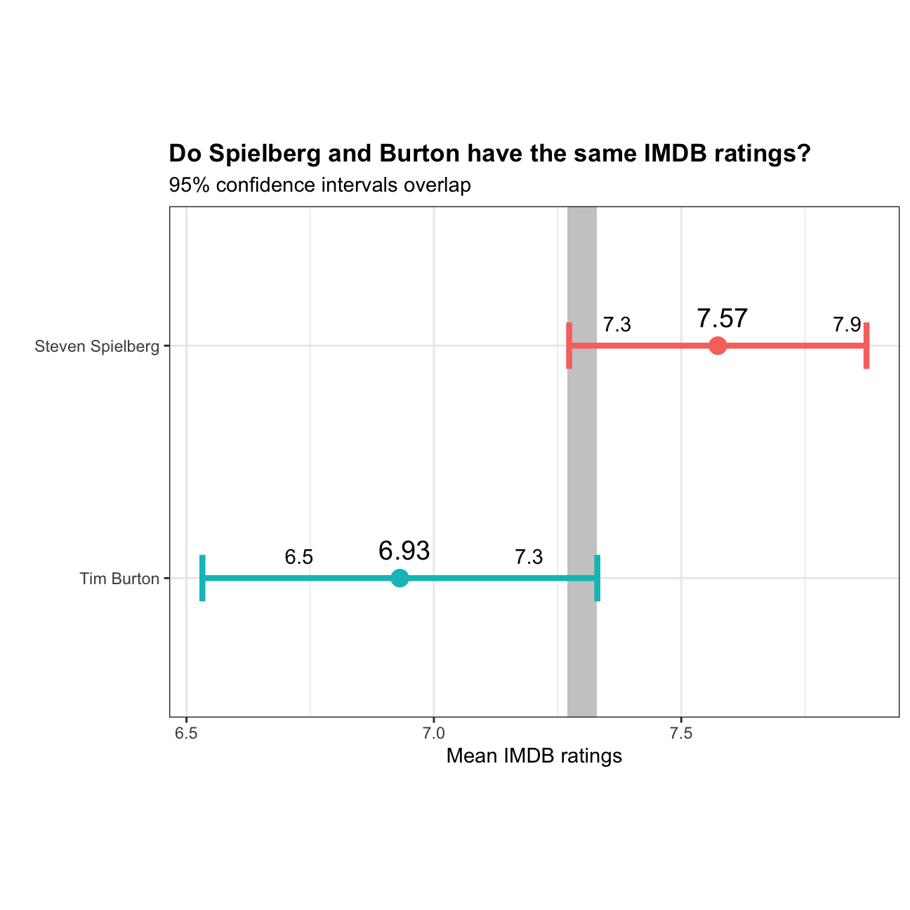

In the following. I will explore whether the mean IMDB rating for Steven Spielberg and Tim Burton are the same or not.
movies <- read_csv(here::here("data", "movies.csv"))
glimpse(movies)## Rows: 2,961
## Columns: 11
## $ title <chr> "Avatar", "Titanic", "Jurassic World", "The Aveng…
## $ genre <chr> "Action", "Drama", "Action", "Action", "Action", …
## $ director <chr> "James Cameron", "James Cameron", "Colin Trevorro…
## $ year <dbl> 2009, 1997, 2015, 2012, 2008, 1999, 1977, 2015, 2…
## $ duration <dbl> 178, 194, 124, 173, 152, 136, 125, 141, 164, 93, …
## $ gross <dbl> 7.61e+08, 6.59e+08, 6.52e+08, 6.23e+08, 5.33e+08,…
## $ budget <dbl> 2.37e+08, 2.00e+08, 1.50e+08, 2.20e+08, 1.85e+08,…
## $ cast_facebook_likes <dbl> 4834, 45223, 8458, 87697, 57802, 37723, 13485, 92…
## $ votes <dbl> 886204, 793059, 418214, 995415, 1676169, 534658, …
## $ reviews <dbl> 3777, 2843, 1934, 2425, 5312, 3917, 1752, 1752, 3…
## $ rating <dbl> 7.9, 7.7, 7.0, 8.1, 9.0, 6.5, 8.7, 7.5, 8.5, 7.2,…selected_directors <- movies %>%
select(director, rating) %>%
filter(director == "Steven Spielberg" | director == "Tim Burton") %>%
group_by(director) %>%
summarize(avg = mean(rating),
sd = sd(rating),
count = n(),
tstat = qt(0.975, count-1),
se = sd/sqrt(count),
lower_ci = avg - tstat*se,
upper_ci = avg + tstat*se)
selected_directors %>%
kable() %>%
kable_classic()| director | avg | sd | count | tstat | se | lower_ci | upper_ci |
|---|---|---|---|---|---|---|---|
| Steven Spielberg | 7.57 | 0.695 | 23 | 2.07 | 0.145 | 7.27 | 7.87 |
| Tim Burton | 6.93 | 0.749 | 16 | 2.13 | 0.187 | 6.53 | 7.33 |
# Selecting Spielberg and Burton
selected_directors <- movies %>%
filter(director == "Steven Spielberg" | director == "Tim Burton") %>%
group_by(director) %>%
summarise(
mean = mean(rating),
sd = sd(rating),
count = n(),
se = sd / sqrt(count),
tstat = qt(0.975, count - 1),
lower_ci = mean - tstat * se,
upper_ci = mean + tstat * se)
# Reproducing the plot
ggplot(selected_directors, aes(
x = mean,
y = reorder(director, mean))) +
# Adding area where confidence intervals overlap
geom_rect(xmin = 7.27,
xmax = 7.33,
ymin = 0,
ymax = 10,
fill = "grey",
aes(alpha = 0.5)) +
# Adding points to plot the mean
geom_point(aes(
color = director),
size = 4) +
# Adding confidence interval error bars
geom_errorbar(aes(
xmin = lower_ci,
xmax = upper_ci,
colour = director,
fill = director),
width = 0.2,
size = 1.5) +
# Adding mean labels
geom_text(aes(
label = round(mean, 2)),
size = 5,
hjust = 0.4,
vjust = -1) +
# Setting fill colors
scale_fill_manual(values = c("#FA8072", "#48D1CC")) +
# Adding confidence interval labels
geom_text(aes(
label = round(lower_ci, 1.4)),
hjust = 4,
vjust = - 1) +
geom_text(aes(
label = round(upper_ci, 1.4)),
hjust = - 4,
vjust = - 1) +
# Adding theme
theme_bw() +
# Removing legend
theme(legend.position = "none") +
# Adding titles to plot and axes
theme(plot.title = element_text(face = "bold")) +
labs(title = "Do Spielberg and Burton have the same IMDB ratings?",
subtitle = "95% confidence intervals overlap",
x = "Mean IMDB ratings",
y = "") +
# Adjusting size
theme(aspect.ratio=3.5/5) 
Now I will perform a hypothesis test with the hypotheses being:
Null hypothesis: There is no difference between the mean ratings for Spielberg and Burton
Alternative hypothesis: There is a difference between the mean ratings for Spielberg and Burton
selected_directors <- movies %>%
select(director, rating) %>%
filter(director == "Steven Spielberg" | director == "Tim Burton")
t.test(rating ~ director, selected_directors)##
## Welch Two Sample t-test
##
## data: rating by director
## t = 3, df = 31, p-value = 0.01
## alternative hypothesis: true difference in means is not equal to 0
## 95 percent confidence interval:
## 0.16 1.13
## sample estimates:
## mean in group Steven Spielberg mean in group Tim Burton
## 7.57 6.93The above t test shows that we have to reject the null hypothesis as the p-value is equal to 0.01 and hence < 0.05.
set.seed(1234)
# Running a simulation with the infer package
hypothesis_test <- selected_directors %>%
specify(rating ~ director) %>%
# Null hypothesis is that there is no difference between the two population means
hypothesise(null="independence") %>%
generate(reps=1000,
type="permute") %>%
# Obtaining difference in means with bootstrap function
calculate(stat="diff in means",
order = c("Steven Spielberg","Tim Burton"))
difference_ratings <- selected_directors %>%
specify(rating ~ director) %>%
calculate(stat = "diff in means", order = c("Steven Spielberg","Tim Burton"))
# Get p_Value through infer package
p_value <- hypothesis_test %>%
get_p_value(obs_stat = difference_ratings,
direction = "both")
kbl(p_value,
col.names=c("p-value"),
caption="Null distribution") %>%
kable_classic()| p-value |
|---|
| 0.008 |
The simulation-based test shows again that the p-value is < the alpha value. Hence, we reject the null-hypothesis.